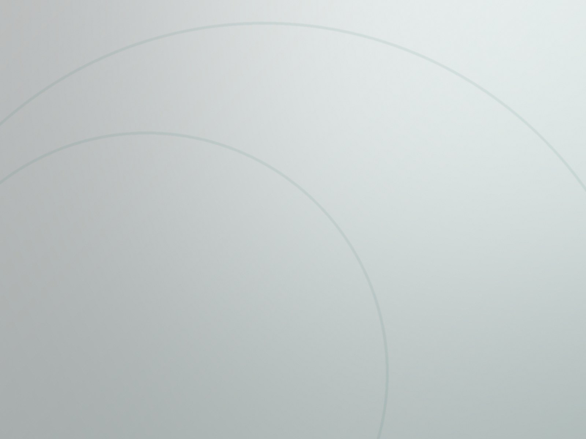
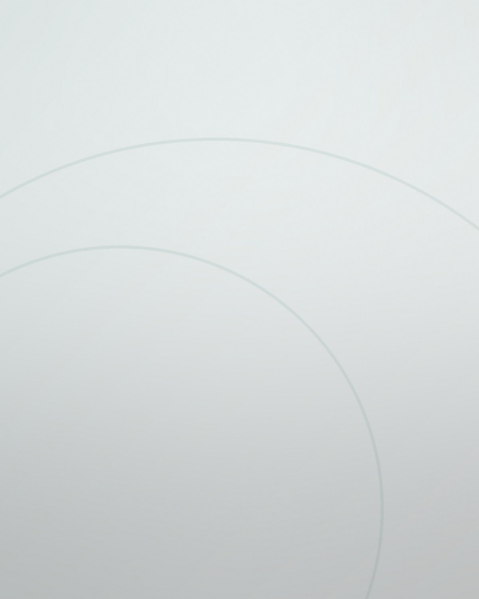
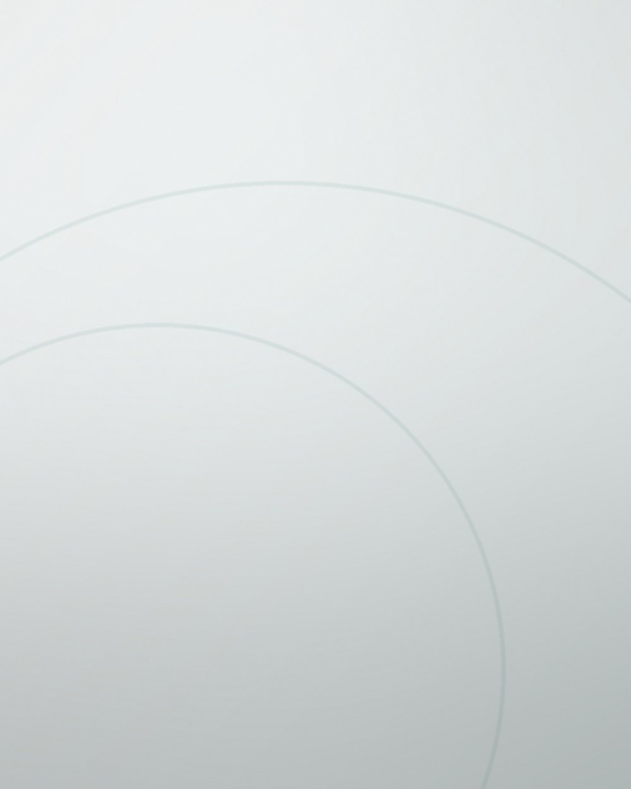
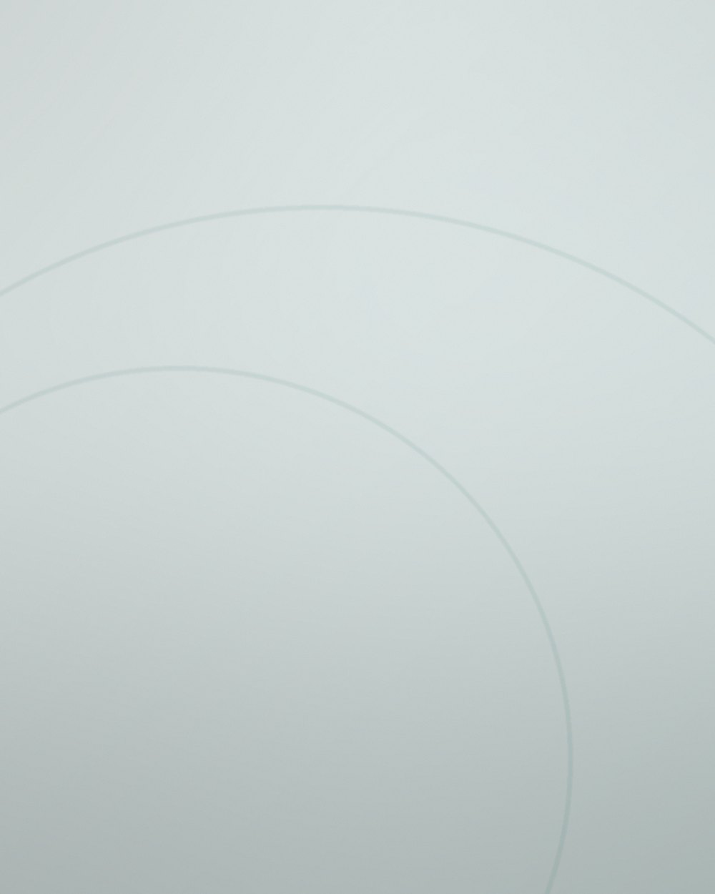
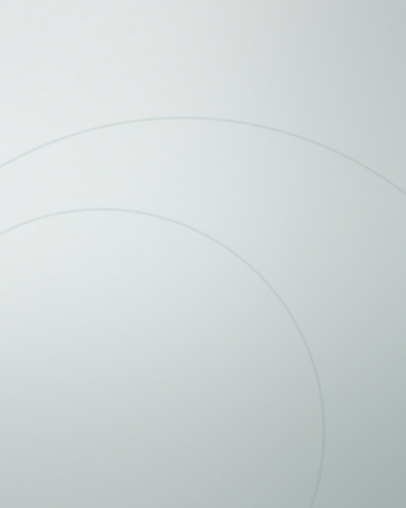

Studio odontoiatrico · Martina Franca
Il tuo sorriso,
la nostra cura.
Odontoiatria contemporanea nel cuore di Martina Franca: diagnosi accurata, percorsi chiari e attenzione alla persona.
-
Indirizzo
Vicolo I Mario Pagano, 2
74015 Martina Franca (TA) - Telefono 080 483 9096
-
Orari
Lun–Ven 9:00–13:00 · 15:00–19:30
Sabato su appuntamento
Il nostro approccio
Curare un sorriso significa prima di tutto ascoltare una persona.
Lo Studio Lupoli nasce dall'idea di un'odontoiatria attenta, precisa e costruita intorno alla persona.
Ogni percorso parte dall'ascolto, dalla diagnosi e dalla comprensione delle esigenze del paziente: il tempo dedicato alla comprensione è parte della cura, tanto quanto il gesto clinico che ne consegue.
-
01
Ascolto
Capire la persona prima del sintomo.
-
02
Precisione
Un lavoro misurato, in ogni dettaglio.
-
03
Cura
Continuità e attenzione nel tempo.

Lo studio
Uno spazio pensato per farti sentire bene.
Un ambiente in cui professionalità, attenzione e tecnologia incontrano una dimensione più personale dell'odontoiatria.
Ogni scelta — dai tempi della visita al modo in cui viene spiegato un percorso — nasce dal desiderio di rendere l'esperienza più serena e comprensibile per chi la vive.
- Prima visita con valutazione e spiegazione del percorso
- Piani di trattamento chiari, concordati con il paziente
- Controlli periodici e continuità nel tempo
Metodo
Ogni percorso comincia dalla diagnosi.
Quattro passaggi, sempre gli stessi, per arrivare a una cura costruita sulla situazione reale del paziente.
-
01
Ascoltare
Comprendere esigenze, aspettative e necessità del paziente.
-
02
Analizzare
Valutare attentamente la situazione clinica prima di definire il percorso.
-
03
Pianificare
Costruire un percorso chiaro e personalizzato.
-
04
Curare
Procedere con attenzione, precisione e continuità.
Trattamenti
Odontoiatria pensata per ogni esigenza.
Sei aree di intervento che coprono la maggior parte delle necessità, dalla prevenzione quotidiana alla riabilitazione estetica.
-
01
Prevenzione
Controlli periodici e monitoraggio nel tempo.
-
02
Igiene orale
Sedute di igiene professionale e istruzioni domiciliari.
-
03
Conservativa
Trattamento del dente naturale nel rispetto della sua struttura.
-
04
Protesi
Soluzioni per la riabilitazione della funzione e dell'estetica.
-
05
Implantologia
Percorsi di sostituzione degli elementi dentari mancanti.
-
06
Estetica del sorriso
Armonia, proporzione e naturalezza del risultato.
Precisione
La precisione è parte della cura.
Diagnosi accurata, pianificazione e verifica costante del risultato: la tecnologia è uno strumento al servizio del giudizio clinico, non un fine.
Radiografia digitale a basso dosaggio, impronte con scanner intraorale senza paste e sterilizzazione tracciata per ogni strumento.
- 01Diagnosi
- 02Precisione
- 03Tecnologia
- 04Controllo
Il team
Le persone dello Studio.
Chi ti accoglie e ti segue, dalla prima visita ai controlli nel tempo.

Titolare dello studio
Dott. Domenico Lupoli
Odontoiatra, titolare dello Studio Lupoli di Martina Franca.
Esercita a Martina Franca da oltre vent'anni. Si occupa in prevalenza di odontoiatria conservativa, protesi e implantologia, con un'attenzione particolare al tempo dedicato alla prima visita: capire la situazione e spiegarla con parole comprensibili è, per lui, il primo atto della cura.
- Formazione
- Laurea in Odontoiatria e Protesi Dentaria — Università degli Studi di Bari
- Ambiti di interesse
- Conservativa, protesi fissa e mobile, implantologia
- Iscrizione albo
- Ordine dei Medici e Odontoiatri di Taranto — n. 764
-

Dott.ssa Chiara Semeraro
Igienista dentale
-

Dott. Michele Convertini
Odontoiatra
-

Anna Rita Pinto
Assistente alla poltrona
Ambienti
Lo studio, da vicino.
Seleziona una fotografia per ingrandirla.
Cominciamo da una prima visita.
Per informazioni o per fissare un appuntamento, contatta lo Studio Lupoli.
Scrivici
Richiedi un appuntamento.
Compila il modulo: ti ricontattiamo per confermare data e orario. Per urgenze chiama lo 080 483 9096.
Contatti
Dove trovarci.
Lo studio si trova nel centro di Martina Franca, in provincia di Taranto.
Indirizzo
Vicolo I Mario Pagano, 2
74015 Martina Franca TA
Telefono 080 483 9096
Orari
Lunedì – Venerdì 9:00 – 13:00 · 15:00 – 19:30
Sabato su appuntamento · Domenica chiuso
Social
Seguici sui social.
Aggiornamenti, consigli di prevenzione e la vita dello studio.